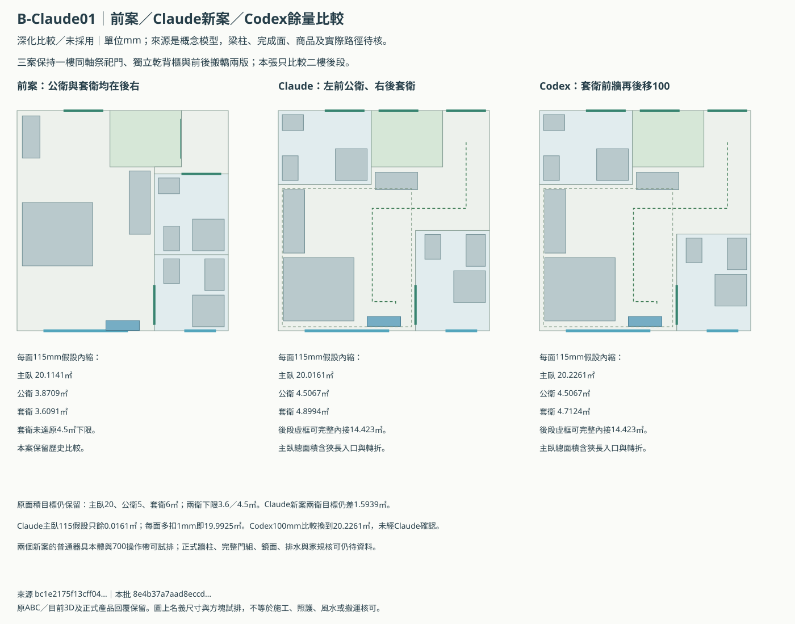
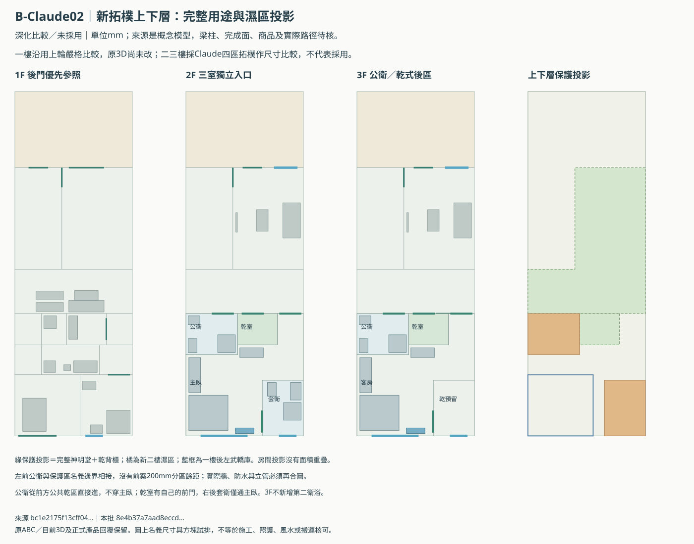

Claude新排法已核對：改善兩衛，保留未解
Claude回覆改採「前方乾區三入口、左前公衛、右後套衛」。Codex獨立重算面積、房間分割、家具與門前；本頁把前案、新案及新增餘量比較放一起。
比較方案，尚未採用，也未達全部原目標。 兩衛仍少於原5＋6㎡目標。Claude主臥每面多扣1mm即跌至19.9925㎡；正式梁柱、管道、完整門組、坐向與鏡面仍未知，沒有整體風水／施工通過結論。
數字正確，但主臥餘量不足
| 115mm假設內縮 | 主臥㎡ | 公衛㎡ | 套衛㎡ | 判讀 |
|---|---|---|---|---|
| 上一輪Codex案 | 20.1141 | 3.8709 | 3.6091 | 套衛未達4.5下限 |
| Claude三入口案 | 20.0161 | 4.5067 | 4.8994 | 達列明下限，主臥僅餘0.0161 |
| Codex100mm餘量比較 | 20.2261 | 4.5067 | 4.7124 | 套衛讓部分面積予主臥；尚未送Claude確認 |
Claude四區恰好拼滿原6000×6260後段，沒有額外借面積，兩衛比前案增加1.9261㎡。原5＋6㎡目標仍差1.5939㎡；Codex100mm比較的差額更大，不默默改原需求。
20㎡包括狹長入口、轉折與梳妝區。後段可完整內接的矩形約14.4231㎡；因此整間總面積達20，也還需要看實際空間感與收納使用。原床1800×2000、1800衣櫃、1200梳妝台、2400後窗及900盆櫃保留。
Codex另比較套衛前牆後移100mm：主臥115假設增至20.2261㎡、套衛降至4.7124㎡，仍過4.5下限；但150mm假設下仍有不足。這是待Claude挑錯的新比較，沒有替屋主接受縮減目標。
三張新圖




後門直接入庫，前門接段仍要獨立核
同意Claude的條件句：若經1360mm接段，即使不扣裝修也不足1500mm。但後門直接進後左武轎庫，不必經該段；不能把這個斷面直接當成後門方案的必經瓶頸。
前門版確實需經1750mm接段及1730名義寬門，門在230mm扣框假設下恰好1500，沒有施工、把手或產品餘量。兩版的巷道權利、抬桿、人員及真正門組仍待核，原1500完成淨寬目標不改。
新公衛在一樓搬轎／家務區上方，且與祭祀／背櫃保護區的名義界線相接。管井不能隨便落在搬轎接段；下方家務區可研究，尚無選定尺寸、位置或合法終端。若機電做不到，應淘汰該排法，不能只以面積表採用。
已能同意的範圍與還沒同意的事項
| 議題 | 交叉核對結果 |
|---|---|
| 前方乾區三入口／四區拓樸 | 四區37.56㎡無重疊／缺漏；完整臥室與濕區退出祭祀／乾背櫃投影。 |
| 面積算術與原目標不能偷改 | 115假設主臥20.0161、公衛4.5067、套衛4.8994；原5＋6仍差1.5939㎡。 |
| 兩衛獨立，暫不改共用雙門浴室 | 避免把同一濕區算兩次或讓訪客穿主臥；正式配置尚未採用。 |
| 1360接段的必要路線範圍 | 若經過即不足1500，這句同意；後門直接進庫不經1360，不能把它列成後門路線必經瓶頸。 |
| 套衛前牆後移100換0.21㎡主臥餘量 | Codex比較：115假設20.2261／4.5067／4.7124；仍未達兩衛目標，未採用。 |
| 主臥含狹長入口／機身回套 | 後段可內接14.4231㎡矩形；室內機候選再向內115避免超出假設完成牆。完整鏡面／氣流／路線待核。 |
| 公衛立管／完成牆／原面積目標 | 公衛貼保護區名義界線，新增排水未定位；整體尚無施工、宗教或搬運核可。 |
Codex接受Claude的新拓樸作優先比較，也同意兩衛維持獨立、暫不改共用雙門浴室。這些局部意見相符，不等於我們已就所有空間、管道與風水達成完整共識。
回覆保留與下一輪具體檢討
上回已核對來源prompt、原stdout雜湊及回覆內容相符；原TEMP路徑本回合不可讀。這裡保存當時完整讀取的回覆轉存稿與取得方式及當時核對紀錄，不偽稱目前仍有原始stdout檔。
下一輪請Claude回應1360路線範圍、主臥含入口的空間品質、Codex100mm餘量比較與左前公衛立管。依專案20秒／逾時分流規則，較長雲端討論由屋主另WSL終端執行；輸出這次存專案私有目錄，避免TEMP遺失：
cd /root/workspace/houseDesignPrepare python3 scripts/review_b_fengshui_with_claude.py --brief Docs/claude-b-fengshui-followup-v3.md --timeout 900 --output inputs/private/b-claude-round3-20261106
只讀，不改圖、不自動採用或登入。目錄需為新建／空目錄，避免覆蓋舊回覆。完成後貼最後Result路徑即可；目前未自動再呼叫Claude。
本批 8e4b37a7aad8eccd78752c16372ec92a3fa5158d4723d7c6dde49a2486db1656｜靜態比較，未執行瀏覽器／WebGL。